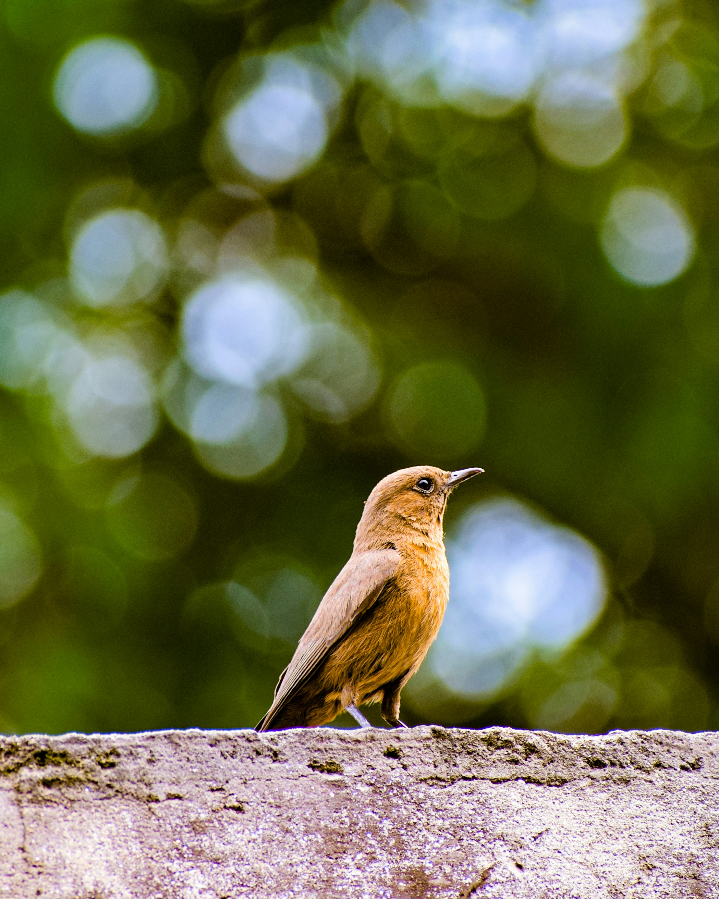

The Brown Rock Chat is a small, dark brown chat associated strongly with rocky landscapes and human structures. It is often seen perched on walls, rocks, roofs, and ruins before dropping down to catch insects. It is particularly well adapted to dry environments and is common around villages, forts, rocky hills, and open scrub.